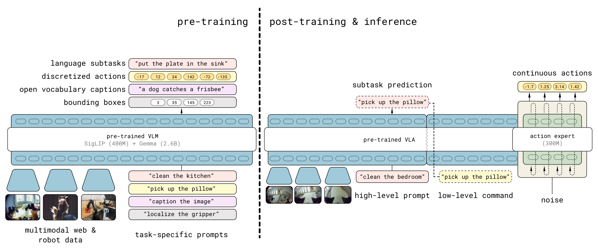

π₀.₅
让不同机器人、不同场景和语义任务共同训练，策略才能到没见过的家里做事。
π₀.₅: a Vision-Language-Action Model with Open-World Generalization
图 12 的搭建家居环境实机测试：四项任务平均进度约 58%–91%；这里测的是进度，不是整任务成功率。
01这篇要解决什么？
π₀.₅ 讨论的是策略怎样获得更宽的分布覆盖。相比在测试时不断修改程序，它主要通过数据和训练配方，让模型同时预测高层语义子任务与低层动作。对 Agent 研究者，它提供一个必须了解的背景：外部规划器所调用的策略究竟已经学到了什么。
02先看一个场景
让机器人去一个训练里没出现过的厨房，指令只有一句“把餐具放进水槽”。这里同时缺两样东西：它要认得没见过的盘子和水槽，还要知道在一间陌生厨房里“下一件该收什么”。只在少数固定场地采数据训出来的策略，换个家就两样都对不上。
03方法怎样运转？

- 01
一个模型，两种输出
主干是现成的 PaliGemma 视觉语言模型（2B，宽 2048、18 层），旁边接一个 300M 的动作专家（宽 1024）。输入是多路相机图像、离散化后当文本 token 输入的本体状态，以及任务指令；输出被劈成两半：前面是文本 logits，用来采样高层子任务，后面若干 token 由动作专家产出并线性投影成连续动作块。注意力上信息单向从主干流向动作专家，两种动作表示互不相看以避免泄漏。分布被分解成 π(a, ℓ̂ | o, ℓ) = π(ℓ̂ | o, ℓ)·π(a | o, ℓ̂)，也就是低层只看被选中的子任务，不看总指令。
- 02
预训练：一切都当离散 token，混五类数据
第一阶段是标准的自回归 next-token prediction，机器人动作用 FAST 动作分词器压成离散 token，与文本、物体框一视同仁。数据有五类：约 400 小时、约 100 个真实家庭的移动操作数据（MM）；各种家庭环境中的非移动单臂/双臂数据（ME）；实验室里的跨本体数据，含开源的 OXE（CE）；人工标注的高层子任务预测，模型还要先预测相关物体框再预测子任务（HL）；以及网页多模态数据，包括图像描述、问答与物体定位（WD）。动作按各数据集自身 1% 与 99% 分位归一化到 [-1, 1]，维度补零对齐到最大的动作空间。这一阶段训练 28 万步。
- 03
后训练：接上流匹配动作专家
第二阶段随机初始化动作专家，用流匹配训练：取 a^{τ,ω} = τa + (1-τ)ω、ω 采自标准正态，让模型预测向量场 ω - a，与文本交叉熵按 α = 10 相加成一个损失，再训 8 万步。数据收窄到 MM 与 ME 中长度受限的成功片段，保留网页数据与多环境那部分 HL，另加口头指令（VI）：由人实时用语言遥控已训好的低层策略，把选得好的子任务记录成高层示范。离散 token 训得快、连续流匹配推得快，这一步的作用就是把两者接起来。
- 04
运行：先出子任务，再出动作块
每次推理先自回归解码文本得到子任务（例如 pick up the plate），再以它为条件做 10 步流匹配去噪，产出一段长 50 的动作块。高层推理的频率低于低层动作推理。动作直接是双臂的关节或末端目标位姿、夹爪、躯干升降与底盘速度，共 18 至 19 维，以 50 Hz 下发给简单的 PD 控制器，没有额外的轨迹规划或碰撞检测；一块执行完再看新观测、重新预测子任务。
backbone = PaliGemma-2B(现成 VLM) + action_expert-300M(后训练时随机初始化)
# 预训练 280k 步：MM + ME + CE + HL + WD，动作经 FAST 压成离散 token，纯 next-token
# 后训练 80k 步：MM/ME 成功片段 + WD + HL + VI(人用语言遥控留下的子任务示范)
# 损失 = 文本交叉熵 + α · ||(ω - a) - f_a(a^{τ,ω}, o, ℓ)||², α = 10
while 任务未完成:
o = (四路图像, 本体状态) # 高层用四路；低层用腕部与前向相机
l_hat = decode_text(backbone, o, 总指令) # 高层子任务，推理频率低于低层
a = flow_match(action_expert, o, l_hat, steps=10) # 长 50 的连续动作块
执行(a) # 18-19 维：双臂关节/末端、夹爪、躯干升降、底盘速度，50 Hz PD 跟踪方法与结果的原文定位见本页引用。
04跟着这个场景走一遍
教学推演：回到上面的场景。第一步，接住这句话的不是「一个规划器加一个策略」，而是同一个模型的两端：PaliGemma 主干读四路相机与本体状态先输出文本，3 亿参数的动作专家再输出连续动作；两级共享权重，低层只看被选中的子任务，不看总指令。第二步，它能认出没见过的盘子，靠的是预训练把五类信号压成同一种离散 token 一起训——本体的移动操作数据、别的机器人与实验室数据、人工标注的子任务、以及网页上的图文问答与物体定位，盘子的外观知识多半来自最后这一类。第三步，后训练才换成流匹配：动作专家从随机初始化开始学着把噪声还原成动作块，同时保留文本损失，并额外吃进人用语言实时遥控真实策略时留下的子任务示范——这正是让它在陌生厨房里挑对「下一件该收什么」的那部分数据。第四步，运行时模型先解码出 pick up the plate，再以这句为条件做 10 步去噪生成一段 50 步的动作块，以 50 Hz 交给 PD 控制器，中间没有轨迹规划也没有碰撞检测；一块做完再看新观测、重新预测子任务，如此推进到任务结束。要注意「陌生家庭」变的是场景与物体外观，动作仍来自这套数据里已有的家务技能分布；论文的高层消融还显示，把子任务数据放进训练但推理时不显式使用（implicit HL）已经能拿到相当一部分收益，说明这部分好处不全在运行时多了一个 planner。
05实验到底表现怎样？
作者在未见过的真实家庭与搭建的家居房间测试移动操作。图 12 比较四项任务，每策略每任务通常 10 次，按各任务评分规则统计完成进度。下列数值为从图 12 读取的约值，不是原始表格精确值。
作者报告的实验结果 · v1
| 图 12 · 平均任务进度（约） | π₀ 300k | π₀-FAST+Flow（无高层） | π₀.₅ |
|---|---|---|---|
| 餐具放入水槽 | 41% | 55% | 91% |
| 物品放入抽屉 | 33% | 71% | 85% |
| 衣物放入篮子 | 31% | 73% | 80% |
| 整理床铺 | 20% | 48% | 58% |
原始证据：训练配方：§IV ↗ · 模型对比：图 12 ↗ · 真实家庭：图 7；高层消融：图 13 ↗ · 评估评分：附录 A-B ↗
整理床铺仍明显难于收餐具。图 7 中三个真实家庭的各任务平均进度约为 65%–94%；不同任务评分、场景和误差条都需保留理解，不能浓缩成一个“家庭任务成功率 90%”。
06收益来自哪里，又停在哪里？
消融与机制证据
图 13 显示：保留高层预测训练数据、但推理时不用显式高层的 implicit HL 仍表现较强；去掉这类训练信号更差。这说明收益部分来自共同训练，不能全部解释成推理时多了一个 planner。
结论的适用边界
模型来源与前提成本要一起看：接入的现成部分只有 PaliGemma 这个 2B 视觉语言主干，其余都由作者训练——预训练 28 万步、后训练 8 万步，3 亿参数的动作专家在后训练阶段从随机初始化开始学，FAST 离散动作表示与流匹配也都在自家训练流程里，而不是运行时调用的外部工具。数据同样是前提：约 400 小时、约 100 个家庭的移动操作数据，加上跨本体与网页数据；其中口头指令只占高层移动操作样本的约 11%，去掉却会让表现明显下降。论文里零样本提示 GPT-4 充当高层策略反而不如自家高层，说明这一级的能力来自领域内训练，而不是通用推理。因此「未见家庭」不等于「没有相关技能数据」，新场景泛化、新物体泛化和新运动技能泛化应分别讨论。
07放回全书的脉络
与 AtomicVLA 对照：两者都让语义规划接到动作生成，AtomicVLA 进一步把动作端组织为技能专家。与 Harness VLA 对照：后者主要改变冻结策略之外的运行方式。
08把阅读变成一个小研究
复现不一定要从头训练大模型。可以固定公开策略，按新背景、新物体、新布局三条轴测试，并同时记录子任务完成进度与整任务成功率。
先自己回答：这项实验怎样才有解释力？
若进度提升但最终成功率变化小，要检查末尾步骤与错误恢复。一个完成九成步骤的策略，对用户可能仍意味着任务未完成。
- 用自己的话说出这篇改变了哪个模块。
- 画出它的输入、输出和一次失败如何被处理。
- 复述一个结果，同时说清基线、指标与实验条件。这一问不给答案，材料在第 05 节。
先自己答，再看前两问的参考答案
这篇改了哪个模块改的是策略本身，具体是动作表示与训练数据混合，而不是在策略外面加一层编排。同一个模型的两端各出一种输出：PaliGemma 主干输出文本形式的高层子任务，旁边 300M 的动作专家输出连续动作块，分布被分解成 π(a, ℓ̂ | o, ℓ) = π(ℓ̂ | o, ℓ)·π(a | o, ℓ̂)，低层只看被选中的子任务、不看总指令；能力来自预训练把五类数据压成同一种离散 token 一起训、后训练再接上流匹配的动作专家。动作之后那一段完全没有改：输出直接是双臂关节或末端目标位姿、夹爪、躯干升降与底盘速度，以 50 Hz 交给简单的 PD 控制器，没有轨迹规划也没有碰撞检测，系统里也没有技能库或外部规划器——零样本提示 GPT-4 充当高层反而不如自家高层，高层消融还显示把子任务数据放进训练、推理时不显式使用已能拿到相当一部分收益。
输入、输出与一次失败如何被处理输入是多路相机图像、离散化后当文本 token 输入的本体状态，以及任务指令，高层用四路图像、低层用腕部与前向相机，全部进同一个模型，没有外部感知模块先把场景转成结构化表示。输出分两级：先自回归解码出一句文本子任务，再以它为条件做 10 步流匹配去噪，产出长 50 的连续动作块，18 至 19 维，以 50 Hz 下发给 PD 控制器执行，高层推理的频率低于低层。失败处理这一条要明确写出来：这篇没有成功检测器、没有验证器、也没有失败后的恢复动作；一块动作执行完就看新观测重新预测子任务，上一段没做成时的纠正只能来自高层在新观测下再次选中同一个子任务，而不是来自任何判定失败的模块。也正因为缺这条通路，实机评测按各任务的评分规则统计完成进度而不是整任务成功率；换到陌生的家里，变的是场景与物体外观，动作仍取自这套数据里已有的家务技能分布。
让不同机器人、不同场景和语义任务共同训练，策略才能到没见过的家里做事。
↗带着位置回到原文
首发日期用于时间排序；以下方法与结果对应 v1。数据为论文作者报告，本讲义没有独立复现实验。
QA就这一页提问或讨论
对某个数字、某条边界或某个推演有疑问，欢迎直接留言：讨论按页面分开，回复会保留在 XinrunXu/awesome-agentic-robotics-papers 的 Discussions 里，需要一个 GitHub 账号。